Multi-Risk Prediction Platform for the species Malus domestica
The Multi-Risk Prediction Platform for the species Malus domestica is a precision-agriculture system built on a neuro-symbolic architecture. It turns raw microclimate and forecast data into proactive agronomic decisions, operating through a five-level data pipeline. The system separates mathematical rigour from synthesis capacity: it processes telemetry deterministically through scientifically validated models (the symbolic layer), and then uses a generative artificial-intelligence engine (the cognitive layer) to formulate recommendations in natural language. The platform anticipates pathogen pressure, pest dynamics and the impact of abiotic stress, continuously calibrating its predictions through a field validation loop (ground-truth). The data is distributed across four expertise modules, enabling optimization of intervention windows, integrated orchard management and a reduced chemical footprint.
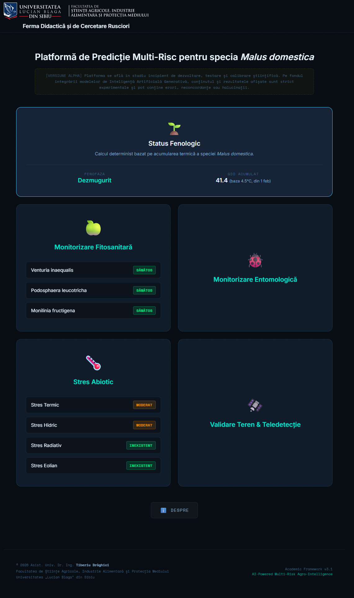
ArduFarm Workshop
The ArduFarm workshop, part of the EduLabFarm event, turns high-school students into architects of agricultural technology by exploring the convergence of electronics and agronomy. By implementing four critical systems (microclimate monitoring, air-quality analysis, irrigation automation and precision thermal sensors), participants learn to use Arduino and NodeMCU microcontrollers to optimize the resources of a modern farm. It is a hands-on experience that develops essential skills in programming, electronics and logical thinking, preparing young people for the digitalized future of the agri industry.


Pre-screening platform for phenotyping water stress in potato
The project aimed to develop and validate a low-cost IoT phenotyping platform for the pre-screening of drought tolerance in potato. The system integrates automated irrigation control, managed through an Arduino architecture with multiplexed capacitive sensors (6 sensors/line) and real-time microclimate monitoring via ESP8266. A state-machine algorithm ensures precise maintenance of soil-moisture thresholds (60% optimal vs. 35% stress). Experimental validation confirmed the platform's ability to induce reproducible water stress and to statistically discriminate the physiological responses (dry-matter fraction) between contrasting genotypes. The developed solution represents a robust and scalable methodological tool, optimizing the preliminary selection of cultivars prior to field agronomic trials.


Technologies 4.0 (FDI 2024 F0060; FDI 2025 F0383)
The project aimed to increase the competitiveness of the students' practical training base through innovation and the integration of Agriculture 4.0 technologies at high performance standards. The activity was based on practical training in topometry and photogrammetry (UAVs, GPS guidance systems, total station).


Smart greenhouse prototyping
The design and construction of the smart greenhouse prototype aimed to demonstrate the integration of IoT technologies in the management of protected spaces. The system is coordinated by a Wi-Fi-enabled microcontroller that acquires real-time microclimate data through a set of sensors. The parameters are transmitted to a mobile interface developed in the Node-RED platform, which provides telemetry and enables remote control of the processes. The execution side includes irrigation automation via a micro-pump. This functional model validates the ability to design a complete hardware-software architecture, from raw-data acquisition to mechanical actuation and cloud monitoring, directly applicable in precision agriculture.


Agronomist Engineer – Agricultural consulting
Coordination of technical field operations and management of agricultural compliance. The activity included topographic surveys, inventorying and demarcation of parcels using precision GPS equipment, as well as aerial monitoring of vegetation status via UAV technology. On the technological and administrative side, activities included drawing up technological sheets for the farm's crops and preparing official reports for public institutions (APIA, Agricultural Chambers, Town Halls), ensuring the alignment of field operations with legal funding and regulatory requirements.

Design and construction of electrotechnical systems
End-to-end management of the hardware development workflow for automation systems, from schematic design and printed-circuit-board (PCB) routing to the assembly, testing and calibration of physical prototypes. The project portfolio includes telemetry modules for environmental-parameter monitoring, power-management systems and electronic boards manufactured to industrial standards. This foundational component-level expertise provides the technical basis required to build, integrate and troubleshoot custom mechatronic and IoT equipment, offering independence in implementing precision hardware solutions for Agriculture 4.0.
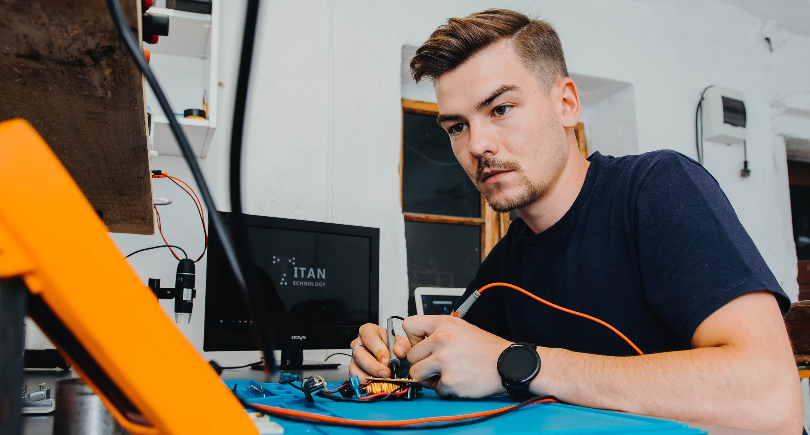
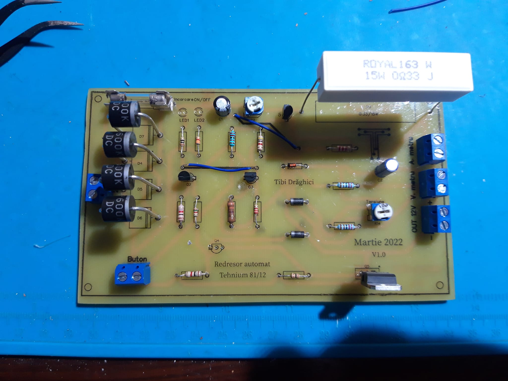
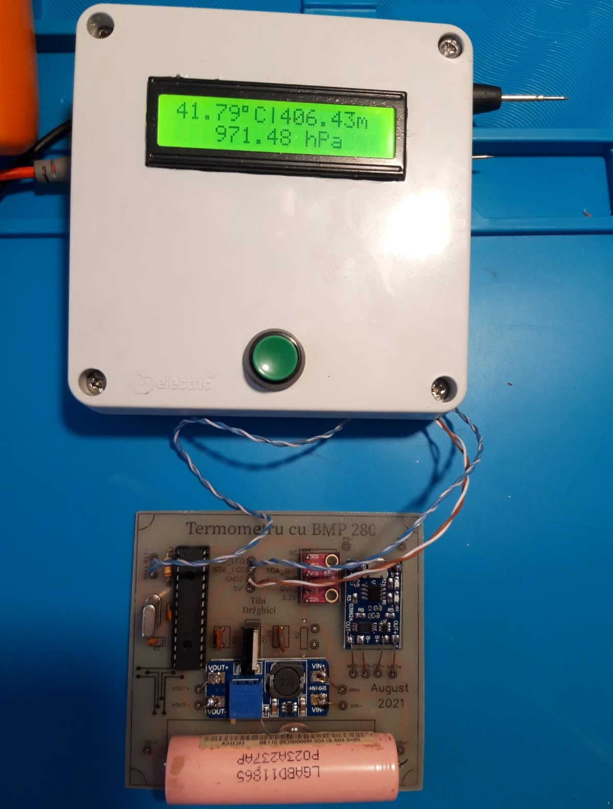
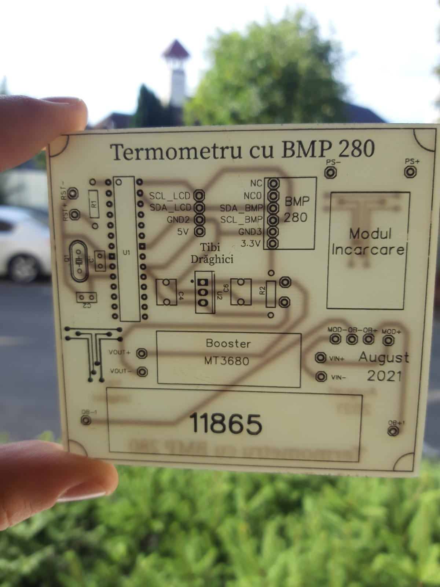
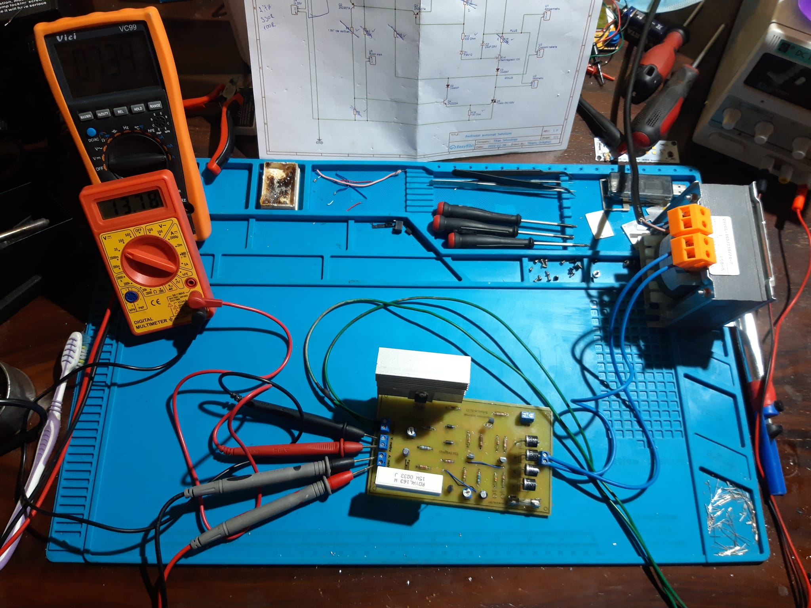
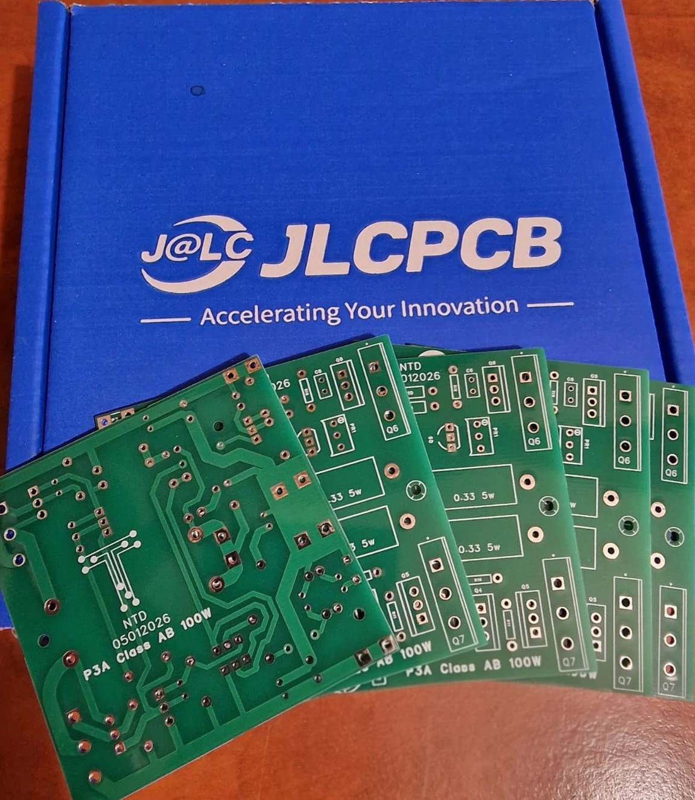
Implementation and testing of an automated drip-irrigation system (Bachelor's Thesis)
The thesis addressed the design, implementation and testing of an automated drip-irrigation system for vegetable crops (lettuce and radish). The automation was built using an Arduino UNO microcontroller connected to soil-moisture sensors. The system was programmed to trigger a water pump via a relay when substrate moisture dropped below the set threshold and to stop it immediately once this value was reached, with water flow optimized through an LM2596 step-down module. Throughout the growing cycle, the installation ran continuously, validating the efficiency of precision irrigation by optimizing water consumption and inhibiting weed development in the inter-row spaces, compared with conventional watering methods. In addition, a hydrotropism phenomenon at root level was recorded and discussed.
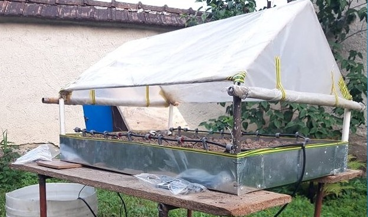
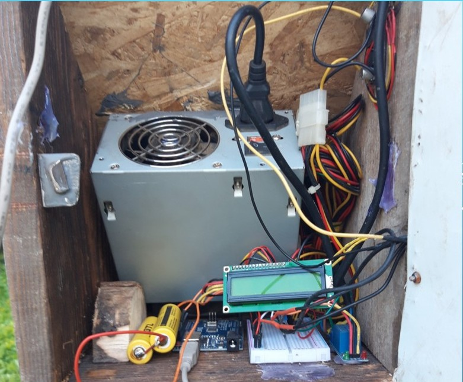
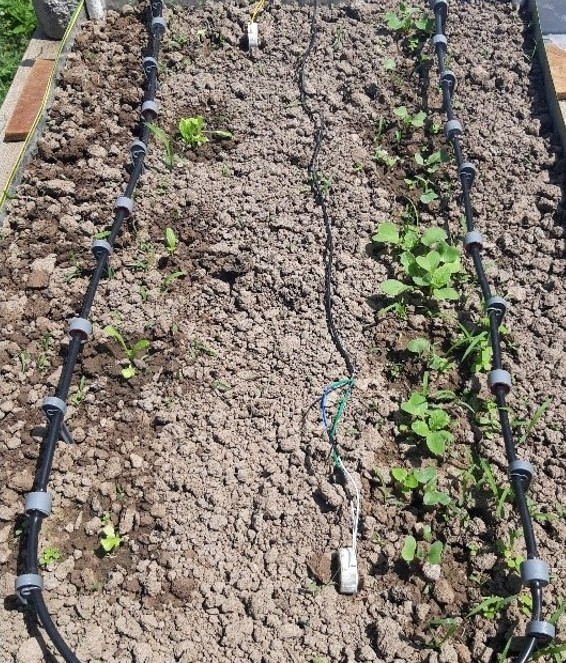
FameLab Finalist
Finalist in the international science-communication competition FameLab, organized by the British Council Romania, which assessed the ability to synthesize and present complex academic concepts within a strict 3-minute format. The presented topic explored an interdisciplinary field of plant biophysics: the influence of acoustic frequencies on plant development. The argument explained the mechanisms by which sound waves can trigger physiological responses at the level of plant tissues.
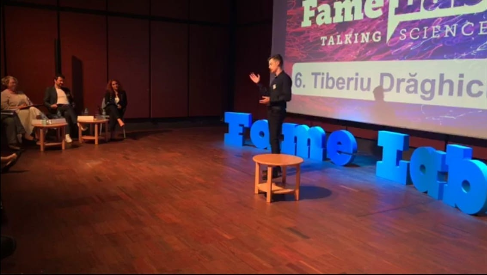
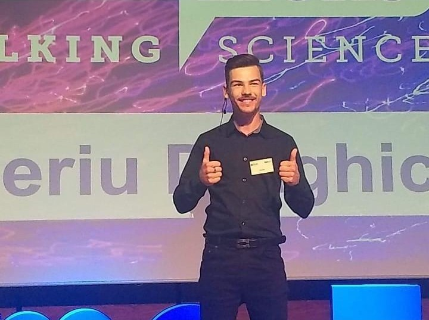